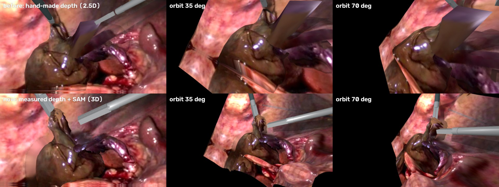

一段 6 秒的真实腹腔镜胆囊切除视频，重建成可以换角度看的 MuJoCo 三维物理场景。深度逐帧测量，用器械杆的已知直径换算成毫米；器官和器械逐帧分割。胆囊是有厚度的四面体体积，抓钳的钳口夹在胆囊颈里，拉动时颈部被拉成锥形。
源视频：胆囊扭转病例报告附带视频 26–32 秒（Wikimedia Commons，CC BY 2.0，Boer, Boerma, de Vries Reilingh），640×360，25 fps。
同一时刻（t = 3 s），同样的三个视角。上一版的深度是手工设计的起伏，换个角度就散架；这一版的几何来自测量。

| 部分 | 来源 | 做法 |
|---|---|---|
| 组织外观 | 视频 | 第 0 帧投影成纹理；被器械或条带挡住的地方，用它最早露出来的几帧填补 |
| 镜头运动 | 视频 | 每帧的转动 + 变焦，用肝脏和右侧器官上的跟踪点拟合；肝脏上的残差 1–5 px |
| 几何与深度 | 测量 | 单目深度网络 + 器械杆宽度标定；背景网格在器械和胆囊后面插值补齐 |
| 器械运动 | 视频 | 分割掩膜的主轴和末端 + 末端深度 → 三维尖端，拟合穿刺点后用逆运动学驱动 |
| 胆囊整体位移 | 视频 | 每帧一个平移（最大约 9 mm），驱动胆囊背面的附着点 |
| 胆囊形变 | 仿真 | 500 个表面点挤出成 2703 个四面体，杨氏模量 300 Pa；颈部被抓钳拉动、被直器械顶开的形变由仿真算出 |
| 紫色条带 | 仿真 | 按分割掩膜做的带纹理薄片，放在它自己测得的深度；远端固定，近端连在胆囊上 |
| 肝脏等背景器官 | 静态 | 测得深度的贴图网格，不参与形变 |
每 5 帧比较一次：仿真里的胆囊表面用那一帧的内镜相机投影，和测得的深度、SAM 的胆囊掩膜比较。被器械和条带挡住的像素不计。
完整仿真把胆囊表面的深度误差从 5.2 mm（组织冻住）降到 4.4 mm，1–2 秒和 3–6 秒都更低。轮廓 IoU 和冻住的版本持平（都是 0.760）：前 1 秒更好，1.2–2 秒更差。两个指标在同一段时间里此消彼长，说明测出来的整体位移只有平移、不含深度变化，和真实运动只对上了一部分。最后 0.3 秒三条曲线一起升到 13–16 mm，三种情况都一样，问题出在这几帧的测量深度，不在仿真。
重建的用途：同一个场景、同一个镜头，换一种操作也能渲染出来，可以当作训练数据。
在做这版重建之前，先让独立的 Claude Code 会话（Opus 5.5）只看视频、自己写代码搭场景。
同一段胆囊视频交给盲测 agent，它 4.8 分钟就交卷：器械轨迹贴合（9 px），但组织是一个球加几根管子。这一版是在同一会话里反复迭代做出来的，不是盲测。